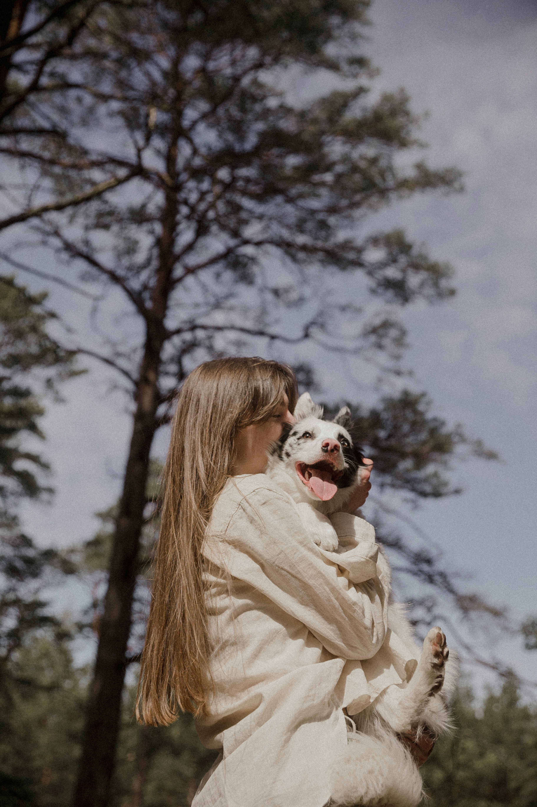

Dale un hogar a quienes mas lo necesitan
Conectamos personas con animales rescatados, facilitamos adopciones responsables y ayudamos a que cada historia tenga un final feliz.

Brindamos a cada animal la vida que merece.
Promovemos la adopcion, la educacion y la proteccion animal con programas de rescate, salud y acompanamiento continuo.

1,200+
Mascotas rescatadas
Protectoras de toda España rescatan a más de 1200 perros y gatos de entornos inseguros y abandono. Cada rescate le brinda a un animal una segunda oportunidad, y nosotros te otorgamos ese poder.
980+
Adopciones completadas
Casi mil perros ya han encontrado un hogar definitivo a través de nuestro programa de adopción. Seleccionamos cuidadosamente a las mascotas para cada familia, para garantizar una relación feliz y duradera.
700+
Mascotas disponibles
En este momento, más de 700 perros y gatos esperan un hogar lleno de amor. Todos han recibido los cuidados necesarios y están listos para conocer a su futura familia.

Como adoptar a tu nuevo amigo
Listo para llevar a casa a tu nuevo mejor amigo? Explora, conoce, adopta y comienza hoy mismo tu viaje de amor y alegria!
Encuentra tu pareja ideal
Explora y encuentra la mascota perfecta segun tus necesidades.
Contacta y conoce
Presiona Adoptar y enviaremos un correo a la protectora para conocerte.
Completa el papeleo
Completa y rellena los documentos proporcionados por la protectora.
Llevalo a su nueva casa
Comienza una nueva etapa con tu nuevo amigo peludo!
Donar salva vidas
Tu ayuda permite financiar rescates, tratamientos veterinarios y alimento para nuestros peludos.
Estamos listos para ayudarte
Si quieres adoptar, donar o ser voluntario, escribenos y te responderemos lo antes posible.
+34 900 123 456
hola@petpaw.org
Calle Petpaw 12, Madrid